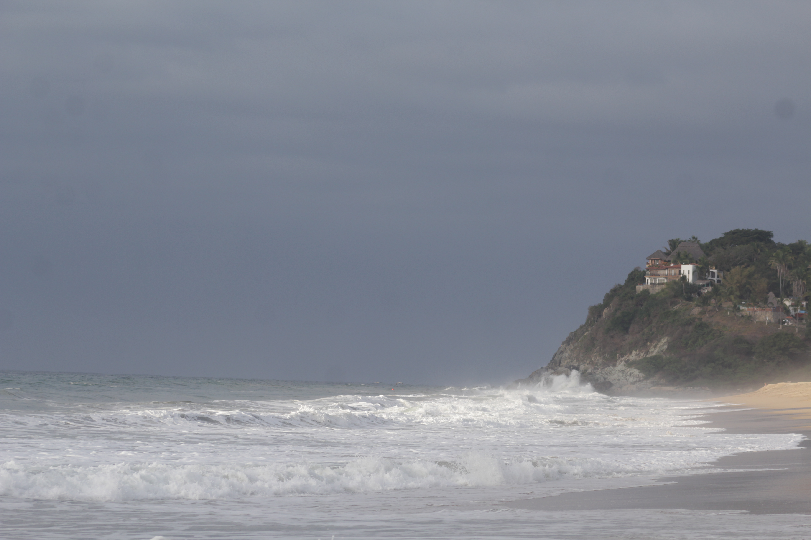
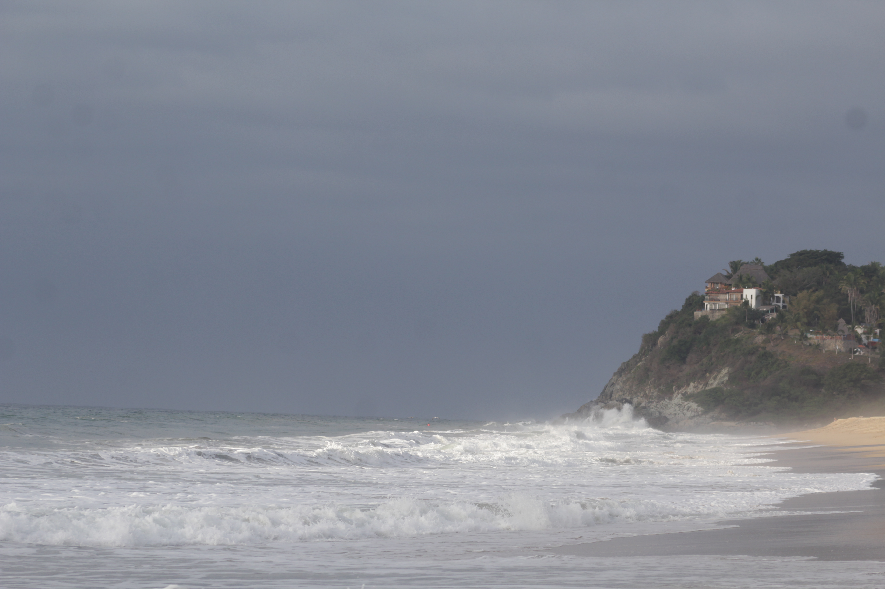

Design Projects
Throughout my career, I have worked on around 15 design projects across various industries and platforms, including redesigning digital products into web and mobile applications and developing e-commerce solutions for wholesale and international retail markets.
My clients include banking, international feminist movements, music platforms, and business tools. While my main focus is UX/UI & product design, I have also contributed to branding and landing page projects, which have expanded my perspective on creating cohesive digital experiences. Below, I present one detailed case study and two additional design projects that showcase my problem-solving skills and user-centered approach.
Case Study: MFM
This platform is a digital experience for a feminist training center that educates, connects, and supports activists, organizations, and public officials. The platform strengthens social leadership, promotes civic engagement, and creates learning and networking spaces to advance gender equality and social justice.

Bold Bites
Bold Bites is a meat products sales platform that underwent a full redesign for both web and mobile. I was involved throughout the process, from early benchmarking and user flow analysis to UI design and brand definition, ensuring visual consistency and usability across all touchpoints.
Glitter
Glitter is a wholesale e-commerce platform for cleaning products that I led and designed from the ground up. While not highly complex, it was a valuable opportunity to manage the entire design process independently, from initial research and user flows to final UI design for both web and mobile platforms.
 
